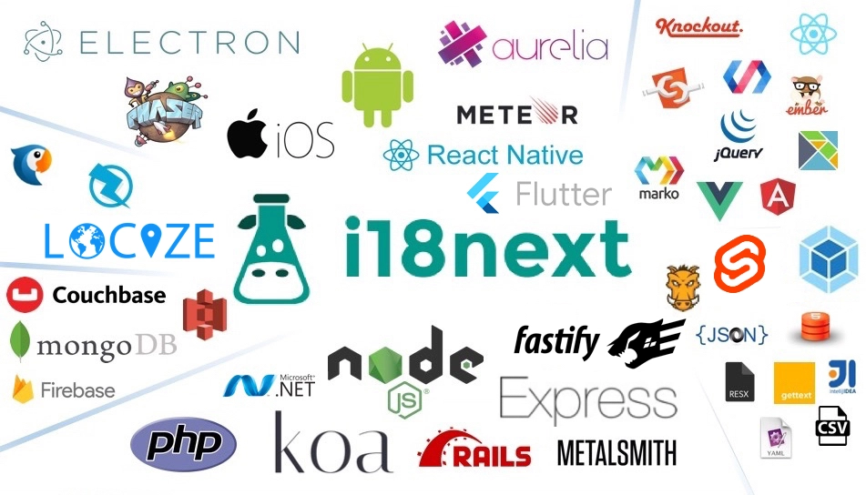

Multilingual support has become a necessity for web and application development. Enter i18next, a powerful internationalization framework that has redefined language translations for developers since its inception in 2011. As we venture into the realm of i18next and its ideal companion, we explore a seamless integration that empowers projects to flourish on the global stage.
TOC
- I. Introduction
- II. Understanding i18next and the Need for an Effective TMS
- III. Practical Tips for Evaluating and Selecting a TMS with i18next
- IV. Key Considerations for Choosing a TMS with i18next
- V. Introducing locize: A Unique Translation Management Solution
- VI. Conclusion: Why locize is the Perfect TMS to Choose
I. Introduction
A. The Significance of i18next as an Extensible Internationalization Framework
In the ever-expanding landscape of web and application development, catering to a global audience is no longer a choice but a necessity. Websites and software products must accommodate users from diverse linguistic backgrounds, making internationalization a crucial aspect of modern development practices. At the forefront of this domain stands i18next, a well-established and highly extensible internationalization framework.
Since its inception in late 2011, i18next has grown into one of the most favored open-source solutions for enabling multilingual support in web and mobile applications. Its widespread adoption can be attributed to its maturity, versatility, and continuous evolution to meet the changing needs of the localization community. From handling simple key-value translations to supporting complex pluralization and language detection, i18next has proven itself as a reliable and powerful tool.
B. Introducing a Comprehensive Translation Management Tool
As i18next's popularity surged, developers encountered a new challenge - managing translations effectively across projects and keeping up with a growing user base. The demand for a seamless translation management solution became evident, leading to the birth of a new service, a comprehensive translation management system (TMS) and the official sponsor of i18next.
What sets it apart from other TMS offerings is its deep integration with i18next, designed to cater to the specific needs of i18next-powered projects. Instead of being just another localization-as-a-service offering, it goes above and beyond to provide a robust ecosystem for internationalization. The creators of i18next, being the founders of a TMS, brought their expertise and experience to ensure that it seamlessly complements the i18next framework.
C. The Purpose of this Blog Post
In this blog post, we embark on a journey to explore the capabilities of a TMS and its integration with i18next, with a focus on how the system designed by the i18next founders stands out in particular as the perfect TMS for managing translations in i18next projects. We will delve into the unique features that set it apart from alternatives, understanding its role as an essential component in the localization workflow.
Throughout this article, we will provide insights and practical tips for developers and localization teams looking to select the right TMS with seamless i18next integration. By the end, readers will have a clear understanding of several advantages, empowering them to make informed decisions when choosing a translation management system that optimizes their i18next-powered localization workflow.
Join us as we unravel the strengths of i18next and the capabilities of a good translation management system, offering a powerful combination for efficient and effective software localization in the globalized digital landscape.
II. Understanding i18next and the Need for an Effective TMS
A. The Background and History of i18next
To comprehend the importance of an effective translation management system, it's essential to grasp the foundation on which it is built - i18next. Born in 2011, i18next emerged as a solution to a critical challenge faced by developers - finding an internationalization library that could seamlessly run on both server-side and client-side single-page applications.
From its humble beginnings, i18next quickly gained momentum, becoming one of the most widely used frameworks for translating web and mobile applications. Its success was fueled by an extraordinary response from the community, which led to the establishment of a fast-growing ecosystem around i18next.
V2 of i18next, released in 2015, marked a significant milestone. With this release, i18next was completely rebuilt to be highly extensible, ensuring smooth compatibility with previous versions. As a result, developers could effortlessly adopt newer releases without disrupting existing codebases. The robustness of the i18next API, which is still actively tested and supported, solidified its reputation as a dependable choice for internationalization.
And nowadays, i18next also offers type safety for your translations. Whenever a developer employs a non-existent or modified i18n key, the TypeScript compiler immediately raises an error, promptly alerting you to the issue before it gives rise to runtime complications.
B. The Maturity and Extensibility of i18next
Having withstood the test of time, i18next has garnered a reputation for being a mature and reliable framework. Its longevity in the open-source community is a testament to its adaptability, with no i18n case deemed unsolvable by i18next. From small projects to enterprise-grade applications, developers have found i18next to be an indispensable tool for multilingual support.
The extensibility of i18next is another compelling aspect. This framework can be integrated into any JavaScript environment, making it compatible with various UI frameworks, i18n formats, and even non-JavaScript platforms such as .NET, Elm, iOS, Android, Ruby, and more. The versatility and flexibility of i18next allow developers to tailor the internationalization process to fit specific project requirements and workflows, catering to the diverse needs of different teams and applications.
C. The Richness of i18next's Features
Beyond its core capabilities, i18next stands out for its rich feature set, which surpasses many traditional i18n frameworks. From basic interpolation and formatting to advanced functionalities such as translations from multiple sources, language detection, plural form resolutions, and caching, i18next provides a comprehensive suite of tools for developers to handle multilingual complexities effortlessly.
The heart of i18next's success lies not just in its technical proficiency but also in the vibrant community that surrounds it. Users actively contribute feedback and improvements, enriching the ecosystem with valuable insights. As a result, i18next continues to evolve and adapt, remaining at the forefront of internationalization and setting the stage for a seamless integration with a translation management system.

With a solid understanding of i18next's significance and features, we can now delve deeper into the area of translation management systems and which TMS is the perfect one to complement the power of i18next.
III. Key Considerations for Choosing a TMS with i18next
When it comes to selecting a translation management system (TMS) that seamlessly integrates with i18next, several key considerations are crucial to ensure a smooth and efficient localization workflow. Let's explore these essential factors to help you make an informed decision:
A. Compatibility and Integration
The first and foremost consideration is ensuring compatibility and seamless integration with i18next. A TMS, built with a focus on i18next, should effortlessly fit into your existing i18next-powered projects without major disruptions. Look for features that allow you to link your i18next translations directly to the TMS, ensuring consistent synchronization between your codebase and localization files.
B. Translation Workflow and Collaboration Features
An effective TMS should simplify your translation workflow and facilitate seamless collaboration between developers, translators, and localization managers. Features like versioning, translation tagging, collaboration, and change tracking are vital to maintain a smooth and efficient localization process. With strong versioning support and integration with third-party translation services, you gain the tools to streamline the translation workflow and optimize collaboration.
C. Support for Localization File Formats
Ensure that the TMS supports the localization file formats used by i18next. As i18next is compatible with various file formats, such as JSON, YAML, PO, and more, the TMS should seamlessly handle these formats to import and export translations effortlessly. A good TMS is designed with this compatibility in mind, ensuring that i18next developers can continue working with their preferred file formats.
D. Customization and Flexibility
Every project has unique requirements and workflows. A flexible TMS should offer customizable settings to adapt to your specific needs. This includes the ability to configure language settings, custom translation workflows, and permissions for team members. By providing customization options, a TMS empowers you to tailor the localization process to suit your project's exact requirements.
By carefully considering these key factors, you can confidently select a TMS that aligns with i18next principles and enhances your localization workflow. Now, let's move on to the practical tips for evaluating and selecting the ideal TMS with seamless i18next integration.
IV. Practical Tips for Evaluating and Selecting a TMS with i18next
Now that we have explored the key considerations for choosing a TMS that seamlessly integrates with i18next, let's dive into practical tips to help you evaluate and select the ideal TMS for your localization needs:
A. Research and Evaluation
Start by conducting thorough research on various TMS options available in the market. Look for TMS solutions that specifically highlight their compatibility with i18next and offer features tailored to support its unique requirements. Read user reviews and testimonials to gain insights into the experiences of other developers and localization teams.
B. Trial and Testing
Many TMS providers offer free trials or demo versions. Take advantage of these opportunities to test the TMS with your existing i18next projects. This hands-on experience will allow you to assess how well the TMS integrates with i18next and how user-friendly it is for your team.
C. Collaboration and Feedback
Engage in conversations with your development team and localization managers. Gather their feedback and consider their input when evaluating TMS options. Understanding their specific pain points and requirements will help you make an informed decision that aligns with your team's preferences and workflow.
D. Support and Documentation
Reliable customer support is crucial when dealing with complex internationalization and localization tasks. Look for TMS providers that offer responsive customer support and comprehensive documentation - not only for the TMS itself, but also for i18next. Having readily available resources and assistance will ensure that your team can resolve any issues quickly and efficiently.
E. Pricing and Scalability
Carefully evaluate the pricing models offered by different TMS providers. Consider the scalability of the TMS and how it aligns with your project's growth potential. Look for transparent pricing structures that suit your project's needs without hidden costs. Ask yourself: "Do I pay too much just by scratching the border of the next bigger plan? Or does the costs scale with the project growth?"
F. Integration with Developer Tools
Efficiency is vital in any development process. Check if the TMS integrates smoothly with other tools and platforms that your development team already uses. Seamless integration with code repositories, build systems, and deployment platforms will enhance your team's productivity.
By following these practical tips, you can confidently assess and select a TMS, that ensures smooth integration with i18next and streamlines your localization workflow.
V. Introducing locize: A Unique Translation Management Solution
A. The Close Alignment with i18next Principles
As the official sponsor of i18next, locize is more than just another translation management system; it is a TMS designed to harmonize with the core principles and philosophy of i18next. Developed by the same creators as i18next, locize benefits from a deep understanding of the needs and challenges faced by developers and localization teams.
This close alignment ensures that locize seamlessly integrates with i18next, offering a unified and optimized experience for managing translations. By leveraging i18next's extensible architecture, locize empowers users to leverage the full potential of the framework while providing additional tools and features that go beyond traditional translation management.
B. Unique Features Setting locize Apart
1. Strong Support for Versioning and Software Development Process
One of locize's standout features is its robust support for versioning, a critical aspect of software development. Proper versioning ensures that changes to translations are managed efficiently, facilitating collaboration among developers and localization teams. With locize, users can confidently make updates and track progress without the fear of losing previous translations or creating confusion.
2. Freedom from Service Lock-In
Unlike some other translation management services, locize believes in giving users the freedom to choose. While locize offers exceptional value as a TMS, it does not lock users into its platform. Instead, users can export their translations and use them with i18next or other preferred localization frameworks. This approach empowers users with full control over their translation data and enhances the flexibility of their localization workflow.
3. Exceptional Support from i18next Creators
The backing of the i18next creators ensures that locize users receive unparalleled support and expertise in internationalization and localization. The team behind locize is intimately familiar with the intricacies of i18next, providing developers with valuable guidance and assistance in optimizing their localization workflow.
4. Support for Multiple Namespace/Files and Proper Pluralization
locize goes beyond standard translation management offerings by providing support for multiple namespaces or files within a project. This allows developers to organize translations efficiently, ensuring clarity and simplicity in the localization process.
Additionally, locize understands the complexities of pluralization rules in different languages. By correctly calculating progress in various languages based on distinct pluralization rules, locize ensures that translations are accurate and contextually appropriate, regardless of the language being translated.
5. Integration with Third-Party Translation Services
To cater to diverse user needs, locize offers integration with third-party translation services. This feature allows users to leverage additional capabilities provided by these services, such as project finalization, the option to work with preferred translators, approvals, and direct contact with translators. The integration with third-party services streamlines the translation process and allows users to collaborate effectively with translation professionals.
6. Freedom to choose how to serve your translations
While you get most comfort out of using the locize CDN, your environment might demand you to bundle the translations with your product (eg. offline usage in areas with restricted internet access or with offline fallback).
Using the CDN has three big advantages:
- You can deploy updates to translations without the need to redeploy/rollout a new version of your application.
- During development, testing you can set your versions to auto publishing. Doing so your translation changes are reflected immediately in your application and results in a lot easier development process.
- You can easily set a version to publish in private mode, which means you will need an API key to download your translations. This enables you for example to use locize as before but without leaking any information to the public.
If your product demands to download the translations, because you need or prefer to host or bundle them yourself you can do so. Using our CDN is completely optional and get only billed if you’re using it. You can download/export the translations using the API or the locize UI or the CLI, also in various formats.
C. locize: The Perfect TMS for i18next-Powered Projects
With its deep integration with i18next, locize emerges as the perfect translation management system for developers and localization teams working with i18next-powered projects. Its unique features, built on a foundation of understanding and commitment to i18next principles, make it a standout choice in the realm of translation management.
In the next section, we will explore key considerations for selecting a TMS with a focus on seamless i18next integration, ensuring that your localization workflow remains efficient, accurate, and hassle-free.
VI. Conclusion: Why locize is the Perfect TMS to Choose
Throughout this journey, we have delved into the significance of i18next as a mature and extensible internationalization framework, and the emergence of locize as a unique translation management solution tailored to complement i18next. Now, let's reinforce why locize stands as the perfect TMS for i18next-powered projects:
-
Deep Integration with i18next Principles:
As the official sponsor of i18next, locize's creators have ensured seamless integration with the framework, offering a unified and optimized experience for managing translations.
-
Unique Features and Differentiators:
locize goes beyond traditional TMS offerings with features like strong versioning, freedom from service lock-in, support for multiple namespaces/files, and proper pluralization. These unique capabilities set locize apart and enhance the i18next localization workflow.
-
Exceptional Support from i18next Creators:
The team behind locize shares the expertise of i18next's creators, providing unrivaled support and guidance in internationalization and localization tasks.
-
Compatibility and Flexibility:
locize is designed to be compatible with i18next and allows for customization to adapt to unique project requirements and workflows.
-
Seamless Collaboration:
With its collaboration-friendly features, locize streamlines communication between developers and localization teams, enhancing the efficiency of the translation process.
-
Integration with Third-Party Translation Services:
locize's integration with third-party translation services expands its capabilities, providing access to additional features and supporting various translation workflows.
-
Efficient Translation Workflow:
locize's focus on versioning, collaboration, and change tracking ensures a smooth and efficient translation workflow for i18next-powered projects.
Choosing the right TMS is paramount to the success of your localization efforts, and locize emerges as the perfect choice to meet the specific needs of i18next projects. Its compatibility, unique features, and exceptional support make it an invaluable tool in the globalized digital landscape.
As you embark on your internationalization journey with i18next, let locize be your steadfast companion in managing translations efficiently and effectively. Embrace the power of this dynamic duo, and watch your projects flourish on the global stage.
Try locize today and see the difference it can make for your business.